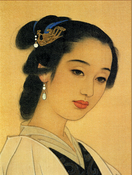

宋词简介| 辛弃疾 词选 | 李清照 词选 | 温庭筠 词选

------如梦令·常记溪亭日暮| 声声慢·寻寻觅觅| 一剪梅·红藕香残玉簟秋------
常记溪亭日暮，沉醉不知归路。
兴尽晚回舟，误入藕花深处。
争渡，争渡，惊起一滩鸥鹭。
赏析：寥寥数语，似乎是随意而出，却又惜墨如金，句句含有深意。
开头两句，写沉醉兴奋之情。接着写“兴尽”归家，又“误入”荷塘深处，别有天地，
更令人流连。最后一句，纯洁天真，言尽而意不尽。这首《如梦令》以李清照特有的
方式表达了她早期生活的情趣和心境，境界优美怡人，以尺幅之短给人以足够的美的享受。
寻寻觅觅，冷冷清清，凄凄惨惨戚戚。乍暖还寒时候，最难将息。三杯两盏淡酒，怎敌他、晚来风急？
雁过也，正伤心，却是旧时相识。
满地黄花堆积。憔悴损，如今有谁堪摘？守著窗儿，独自怎生得黑？
梧桐更兼细雨，到黄昏、点点滴滴。这次第，怎一个愁字了得！
赏析：靖康之变后，李清照国破，家亡，夫死，伤于人事。这时期李清照的作品再没有
当年那种清新可人，浅斟低唱，而转为沉郁凄婉，主要抒写作者对亡夫赵明诚的怀念和自己孤单凄凉的
景况。此词便是这时期的典型代表作品之一。
红藕香残玉簟秋，轻解罗裳，独上兰舟。云中谁寄锦书来？
雁字回时，月满西楼。
花自飘零水自流，一种相思，两处闲愁。
此情无计可消除，才下眉头，却上心头。
赏析：此词作于词人与丈夫赵明诚离别之后，
寄寓着作者不忍离别的一腔深情，反映出初婚少妇沉溺于情
海之中的纯洁心灵。作品以其清新的格调，女性特有的沉挚
情感，丝毫“不落俗套”的表现方式，给人以美的享受，是一
首工致精巧的别情词作。
©淘气汉子Urchins